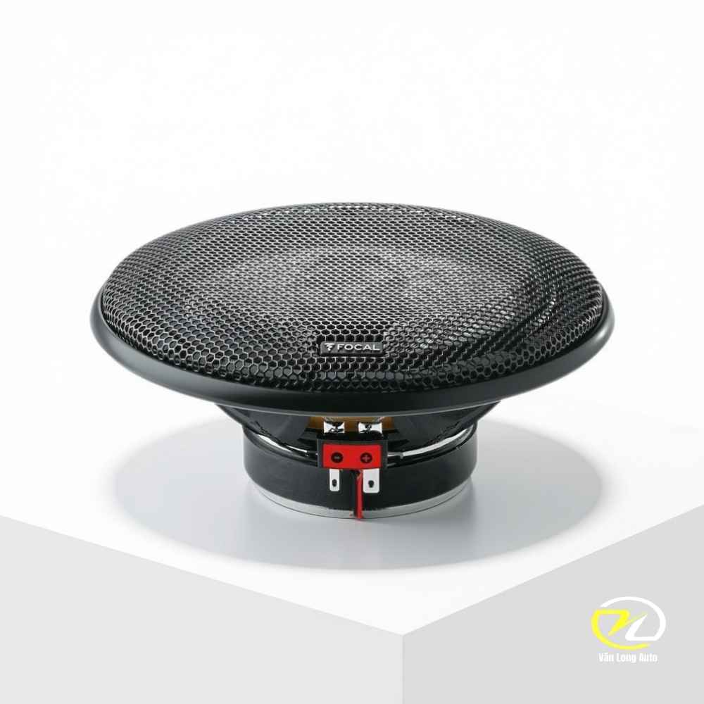
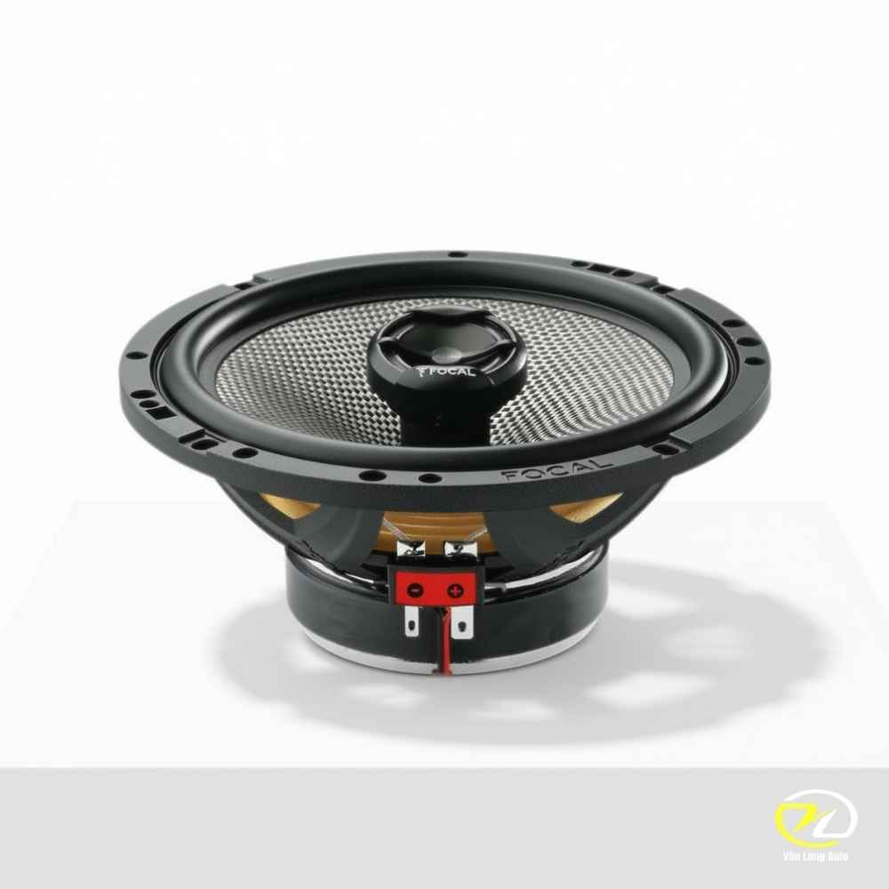
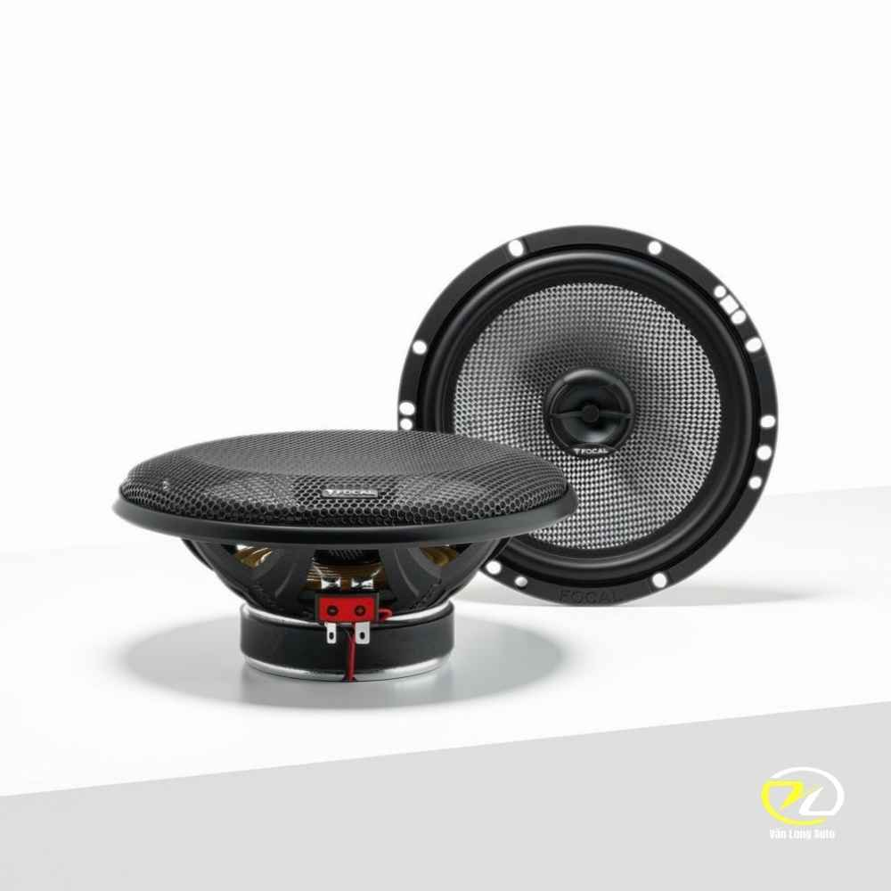

Focal Access 165 AC tại Văn Long Auto
1. Nâng cấp âm thanh tinh tế với Focal 165 AC
Loa đồng trục Focal Access 165 AC tích hợp cả dải âm trung (mid), âm trầm (bass) và âm cao (treble) trên cùng một trục. Thiết kế này giúp tối ưu hóa không gian lắp ráp, đặc biệt phù hợp để lắp ở cánh cửa sau của ô tô, tạo hiệu ứng âm thanh vòm lan tỏa khắp cabin.
2. Tính năng nổi bật của Focal Access 165 AC
Sự khác biệt của loa Focal đến từ những vật liệu độc quyền. Các kỹ sư âm thanh Pháp đã kết hợp các công nghệ tiên tiến để mang lại chất âm vượt trội so với loa nguyên bản của xe.

THÊM ẢNH ĐIỂM NỔI BẬT VÀO SRC2.1. Màng loa DFS (Dual Fiberglass Structure)
Màng loa nón được dệt từ sợi thủy tinh kép (DFS) tạo nên sự cứng cáp và cực kỳ bền bỉ. Chất liệu này giúp loa chịu được môi trường nhiệt độ khắc nghiệt bên trong cánh cửa xe, đồng thời mang lại dải âm trầm (bass) sâu, chắc và có lực.

THÊM ẢNH ĐIỂM NỔI BẬT VÀO SRC2.2. Treble vòm ngược bằng nhôm độc quyền
Focal trang bị tweeter (loa treble) dạng vòm ngược bằng nhôm đặc trưng. Cấu trúc vòm ngược giúp phân tán âm thanh rộng hơn, mang lại dải âm cao thanh thoát, chi tiết và không bị chói gắt dù mở ở mức âm lượng lớn.

THÊM ẢNH ĐIỂM NỔI BẬT VÀO SRC2.3. Độ nhạy cao, dễ dàng phối ghép
Với độ nhạy lên đến 91 dB và trở kháng 4 Ohms, Focal 165 AC có thể hoạt động xuất sắc chỉ bằng nguồn phát trực tiếp từ màn hình Android hoặc đầu CD nguyên bản mà không bắt buộc phải độ thêm amply, tiết kiệm đáng kể chi phí nâng cấp.
3. Thi công lắp đặt tại Văn Long Auto
Quá trình nâng cấp loa tại Văn Long Auto tuân thủ các quy chuẩn khắt khe: sử dụng vòng dưỡng loa (adapter) chống nước, jack cắm chuyển đổi an toàn (không cắt trích dây zin). Ngoài ra, chúng tôi khuyến nghị thi công thêm cách âm cánh cửa để màng loa phát huy 100% công suất mà không bị rè hay lọt tạp âm.
Quy cách đóng gói
- 1 cặp (2 chiếc) loa đồng trục Focal Access 165 AC.
- 2 mặt lưới bảo vệ loa (Grille) thiết kế lưới thể thao.
- Ốc vít và sách hướng dẫn sử dụng chính hãng.